EZCollegeApp

EZCollegeApp is a UGA LLM Lab spin-off project developed by GyriQAI, Inc. It brings school discovery, application planning, document organization, essay feedback, deadline tracking, and AI-assisted counseling into one connected workspace.
What it does
EZCollegeApp keeps a student's goals, activities, school list, documents, deadlines, and feedback in one connected workspace. Students can build a reusable profile, compare schools and programs, organize a balanced application strategy, receive context-aware guidance, and keep every task visible from exploration through submission. The aim is to make structured application guidance available beyond students who can access expensive private counseling while keeping students in control of their decisions and authentic voice.
- Student profileOrganize academic, activity, preference, and application information.
- School strategyBuild and refine a balanced school list around goals and fit.
- AI guidanceCoordinate planning, document review, and next-step recommendations.
- Essay feedbackReview clarity, evidence, organization, and voice while preserving student authorship.
- TimelineTrack deadlines, recommendations, essays, and submission materials.
Lab connection
The project applies research in language models, agent memory, multi-agent coordination, and education to a practical student workflow. Product questions—how an AI remembers context, communicates uncertainty, and supports a user without replacing their voice—also inform research questions.